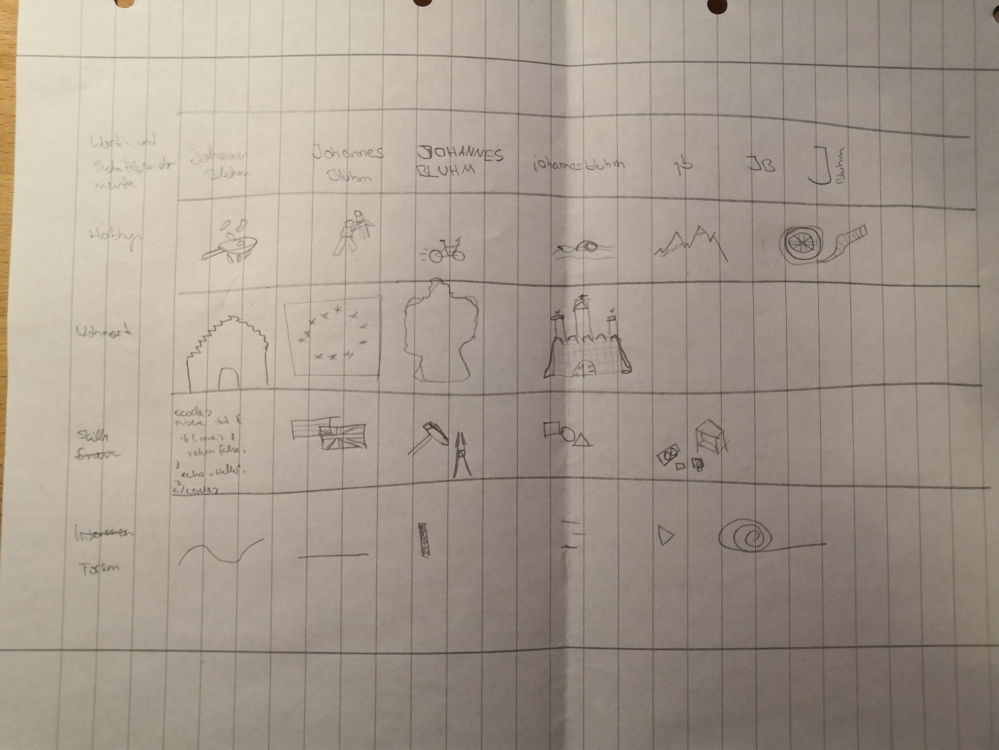
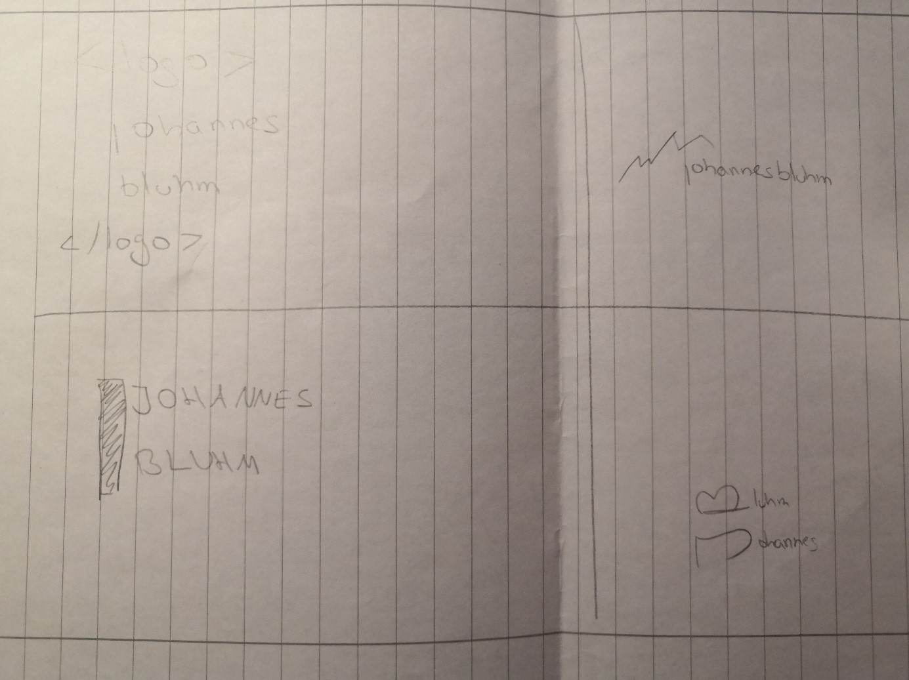
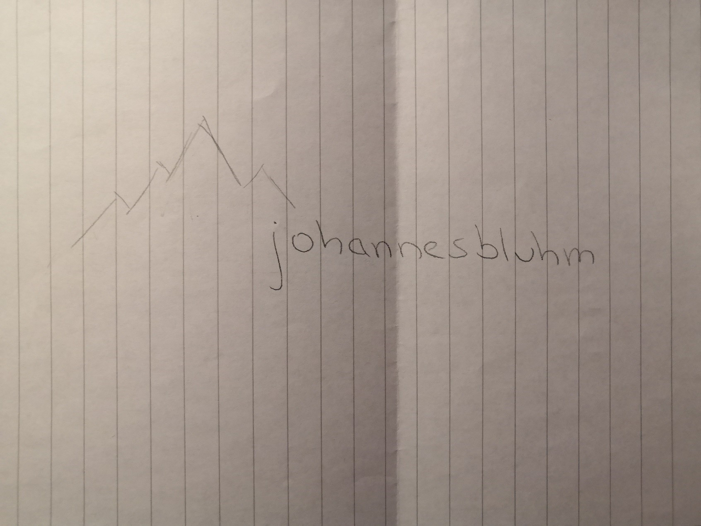
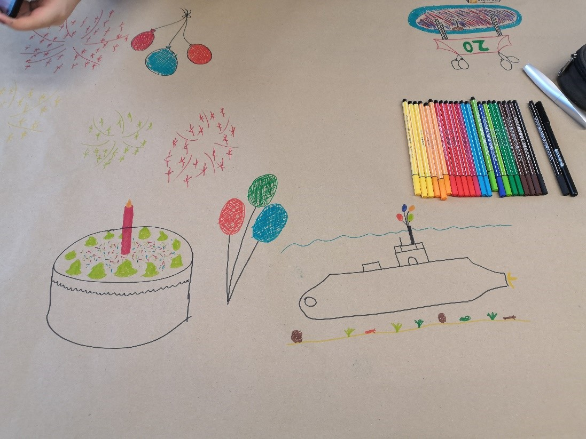
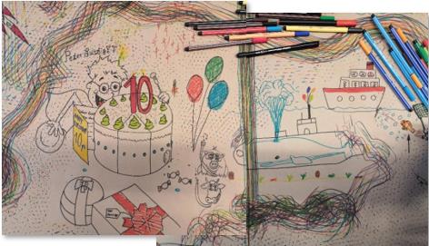
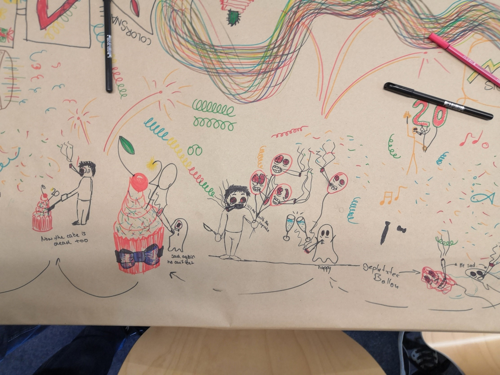
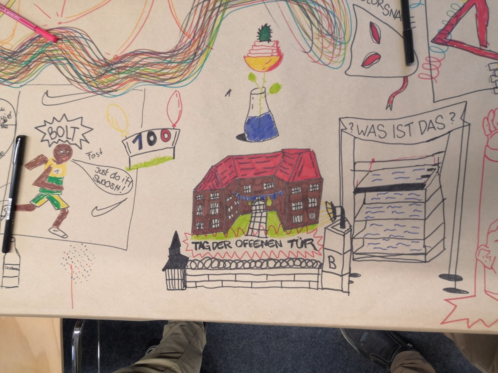
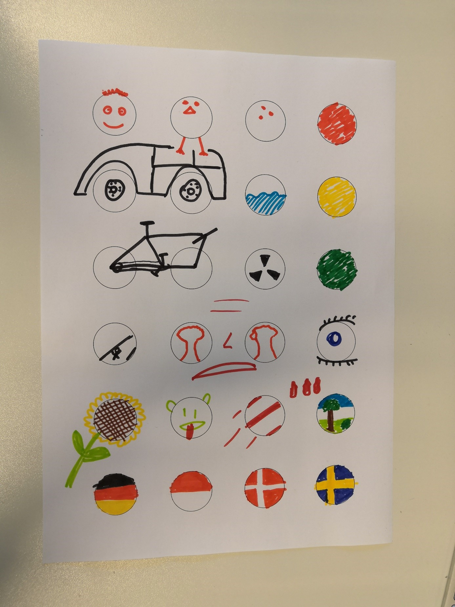

Hochschule Flensburg
Dokumentation
WS 2019/20
Johannes Bluhm
B-MI1
Ich finde Kreativität sehr wichtig, da ich den Status Quo sehr schnell langweilig finde. Ich finde Freude daran, Dinge und Prozesse stets zu optimieren beziehungsweise zu verändern und so neue Wege und Möglichkeiten zu finden. Auch in vielen Alltagssituationen bin ich kreativ und überlege mir, wie man Dinge verändern und verbessern könnte. Ich denke, dass macht Kreativität auch für mich aus: Dinge ständig neu zu sehen, versuchen anders zu lösen und dabei eine bessere Lösung zu entdecken. Dabei muss „besser“ aber nicht unbedingt schneller oder günstiger sein, besser kann auch schöner oder interessanter sein.
Ich denke, dass ich ein recht kreativer Mensch bin, der, wie oben schon beschrieben, auch im Alltag immer recht viele Ideen hat. Wenn es darum geht Probleme zu lösen, bin ich in der Regel der Erste, der einen Vorschlag parat hat.
Meine bisher kreativste Leistung war keine einzelne Leistung, sondern ein Prozess, der sich über einen langen Zeitraum hingezogen hat. Ich habe vor längerer Zeit damit begonnen, eine Web-Anwendung zur Verwaltung und Organisation von Online-Communites zu schreiben, welche dann über die Jahre immer weitergewachsen ist. Sobald es eine neue Problemstellung gab, habe ich mir dann überlegt, wie ich diese mithilfe dieser Software umsetzen kann. Des Weiteren habe ich auch das komplette Interface erstellt und zwar so, dass es für jegliche Nutzer möglichst intuitiv bedienbar ist. Auch dies war wieder ein laufender Prozess: Ich hatte zuerst eine technische Aufgabe, die erledigt werden musste. Daraufhin musste ich mir überlegen, wie ich dies dem Benutzer möglichst benutzerfreundlich präsentiere. Sobald ich dies dann umgesetzt habe, habe ich mir dann von den Nutzern Feedback geholt und dieses wiederrum umgesetzt. So konnte ich mir über die Zeit eine Art „Richtlinien“ erarbeiten, welche Elemente gut verstanden werden und welche nicht so gut.
Eigentlich bin ich immer kreativ daher möchte ich diese Frage lieber in die Richtung beantworten, „was hilft mir wieder kreativ zu werden“. Manchmal habe ich das Problem, dass ich vor etwas Sitze, aber nicht weiß, wie ich es umsetzen soll. Dann hilft es mir, Abstand von dieser Aufgabe zu nehmen. Je mehr ich Abstand nehme, desto besser. Etwas anderes arbeiten hilft nicht so viel, wie etwa duschen, wo man den Kopf komplett freibekommt und auf nichts anderes fokussiert ist. Noch besser hilft mir aber wandern, wo ich die Möglichkeit habe, über Stunden meinen Kopf freizubekommen und an nichts anderes denken zu müssen.
Besonders schlimm finde ich es, wenn ich immer wieder aus dem Denkprozess herausgerissen werde. Ich habe kein Problem damit, wenn ich – auch eventuell länger – meine Arbeit unterbrechen muss. Wenn nun aber alle 5 Minuten jemand zu mir kommt, mit einer kurzen Frage, oder ähnlich, dann reist mich das sehr hinaus.
Auch ablenkend finde ich Lärm. Ich kann mich wesentlich besser in Stille oder zu Musik konzentrieren und kreativ sein.
Ein kreatives Beispiel einer anderen Person
Hier habe ich ein etwas ungewöhnliches Beispiel, nämlich einen guten Freund von mir. Der hat das Talent, dass er – selbst, wenn er nicht zugehört hat – mit nur wenigen Stichworten zu einem Thema einen sehr ausführlichen und immer wieder überraschend informierten Beitrag zu liefern. Gerade in der Schule war dies immer stets interessant, wenn ein Lehrer in etwas gefragt hat und er darauf hin – obwohl er nicht einmal zugehört hatte – eine ausführliche Antwort geben konnte.
Die Zufallstechniken Übung hilft einen in der Hinsicht, dass man einfach einen größeren Kreis an Gedanken hat, durch die man eventuell Ideen neu kombiniert auf die man vorher nicht gekommen wäre. Meine beste Idee war die Verknüpfung des Wortes „Sportler“ mit dem zufällig ausgesuchten Wort „Olivenöl“. Daher habe ich mir einen Sportler vorgestellt, der sich immer mit Olivenöl einreibt. Die entsprechende Begründung dafür ist dann, dass er ein Schwimmer ist und durch das Olivenöl besser im Wasser gleitet (ähnlich wie die russische Olympiamannschaft die sich aus dem gleichen Grund Schnurbärte haben wachsen lassen).
Dazu muss ich aber hinzufügen, dass ich die Zufallstechnik-Übung mit dem Lexikon wesentlich besser fand, einfach aus dem Grund, dass es mehr Möglichkeiten und somit auch abstrusere Kombinationen möglich waren.
Das gezeigte Logo zeigt meinen Namen sowie eine schematisch angedeutete Bergkette. Ich habe mich für diese Variante entschieden, da mir die Varianten, welche sehr minimalistisch und modern gehalten waren am besten gefielen. Einen Schriftzug allein hingegen, wirkte zu „verloren“. Ich habe mich für die Berge entschieden, da sie zwar zu weniger Punkten passen (so haben weder Flensburg noch Hamburg Berge) aber recht minimalistisch sind. Des Weiteren konnte ich sie noch minimalistischer machen, in dem ich nur ihre Kontur angedeutet habe. So war es mir auch möglich, sie näher an den Text zusetzen, sodass die beiden Elemente nicht so stark voneinander getrennt wirken.
Die Morphologische Box hat mir in dem Sinne geholfen, dass ich mir nicht alle Kombinationen vorstellen musste, sondern direkt vergleichen konnte. Ich hatte bereits von Anfang an den Wunsch, ein minimalistisches, modernes Logo zu gestalten, erst aber als ich die Berge gezeichnet habe, habe ich gesehen, dass sich diese recht gut noch weiter vereinfachen und – wie oben beschrieben – so mit dem Text verbinden lassen. Auch konnte ich so sehr gut entscheiden, dass ein Logo mit einer komplexeren Grafik ganz klar meinen Designvorstellungen wiederspricht. Nicht zuletzt bin ich auch durch das aufzeichnen verschiedener Schriftdesigns auf weitere Schriftdesigns gekommen, die ich vorher nicht im Kopf hatte.
  Die Übung hörte sich zu Beginn recht monoton und hat auch recht schleppend angefangen, wenn man so mit einem komplett leeren Blatt konfrontiert wird. Je mehr bereits auf dem Blatt vorhanden ist desto mehr kreative Einfälle hatte ich die bestehenden Zeichnungen zu ergänzen oder abzuändern und vor allem auch weiter vom ursprünglichen Motto „Jubiläum“ abzuweichen.
Nachdem also diese Eingangsblockade überwunden war, und man sich selbst die ersten Visuellen Assoziationen geschafft hat ging es wesentlich leichter und flotter voran. Je mehr Eindrücke – auch von anderen geschaffene – ich aufnehmen konnte, desto mehr kreative Einfälle hatte auch ich.
Besonders wenn mehrere Leute gleichzeitig an einer Figur oder an einer Zeichnung gearbeitet haben, gab es einer besonders hohe Anzahl an neuen Ideen.
In Summe hat mir diese recht viel Spaß gemacht, insbesondere zum Ende hin, wo alle recht frei und vor allem gemeinsam an den Zeichnungen gearbeitet haben.
Bemerkenswert fand ich aber vor allem den großen Unterschied zwischen den Gruppen. So wiesen die Zeichnungen der Gruppen aus dem anderen Kurs wesentlich mehr Gewalt und Drogenkonsum auf; um genau zu sein, wiesen die aus unserem Kurs keine einzigen auf. Noch überraschender fand ich aber, dass obwohl die Gruppen durchgewechselt wurden, unsere ursprünglichen Zeichnungen nicht um extrem viele Gewaltdarstellungen erweitert wurden, wie man es nach dem Betrachten der anderen Zeichnungen durchaus hätte vermuten können.
Meine Ursprüngliche Zeichnung (oben) und die „verbesserte“ Version mit großer Feier und einem Wal in einem U-Boot (unten)
 
Meiner Meinung nach die kreativsten Verwandlungen: Die Lustballons die auf einmal rauchen und die Schule die in ein Gefängnis mit einem „Tag der offenen Tür“
 Ich stimme der Bewertung der Gruppe überein, da es in unserem Kurs viele andere Kontextvariatonen gab, die entweder wesentlich bessere Ideen, viel besser künstlerisch umgesetzt oder sogar beides waren. Ich finde auch, dass es viele Variationen gab, die keine Punkte erhalten haben, obwohl sie sehr gut waren, was eventuell daran lag, dass einige Variationen extrem gut gemacht waren.
Ich vertrete wie Ken Robinson die Meinung, dass unser Bildungssystem veraltet ist und nicht mehr den Anforderungen entspricht, die ein Bildungssystem heute erfüllen muss. Seine Forderung, einfach den Umfang von kreativen Fächern zu erhöhen, finde ich aber nicht weitgehend genug. Meiner Meinung nach sollte auch die Art wie gelehrt wird, in den Vorhandenen Fächern überarbeitet werden. Grundsätzlich muss man sich die Frage stellen, ob Frontalunterricht noch zeitgemäß ist.
Ich denke wie Ken Robinson auch, dass vor allem Kinder diejenigen sind, die vor Kreativität nur so sprudeln. Daher finde ich sein Argument, dass Kinder diese Kreativität aberzogen wird, sehr schlüssig.
Die Ansicht von Elizabeth Gilbert hingegen, dass Kreativität wie ein kleiner Geist ist, also außerhalb des Menschen ihren Ursprung hat, teile ich nicht. Ich denke, dass Kreativität oder das kreative Denken tief in dem Menschen verwurzelt ist. Auch wenn Kreativität nicht direkt steuerbar ist – man kann nicht einfach sagen „jetzt habe ich einen kreativen Einfall“, man kann diesen Entstehungsprozess lediglich unterstützen, so ist sie doch etwas, was direkt in einem selber vorgeht.
Das letzte halbe Jahr über haben meine Freunde und ich viel Zeit damit verbracht, im Open-World Spiel „Arma 3“ die virtuelle Insel „Nordholm“ zu erkunden. Mit mehr als 250km2 ist die Insel zwar extrem groß, dennoch hatten wir immer wieder das Gefühl uns immer an denselben Orten aufzuhalten. Aus diesem Grund hatte ich die Idee, eine interaktive Karte zu entwickeln, die darstellt, welche Orte wir besucht haben. Mit Hilfe der gesammelten Positionsdaten können wir dann nachvollziehen welche Wege wir genommen haben und welche Orte wir mehr und welche wir weniger besucht haben.
Die Idee ist als Lösung für das oben genannte Problem entstanden, somit wurde keine der gelernten Techniken eingesetzt.
Am meisten für meine private Leistung geholfen hat mir, mir bewusst zu machen, was mich kreativ macht und dies dann entsprechend anzuwenden. Einige Techniken waren definitiv neu für mich und ich könnte mir gut vorstellen, diese auch in Zukunft anzuwenden, so etwa die Morphologische Box. Andere fand ich hingegen nicht hilfreich in diesem Kontext und bewirkten somit bei mir eher das Gegenteil wie etwa die Osborn-Checkliste, die sich meiner Meinung nach eher für Dinge wie Businesspläne eignet.
Grundsätzlich fand ich den Kurs gut ich habe aber dennoch zwei größere Kritikpunkte:
Fast alle Techniken waren eher auf künstlerische Kreativität ausgelegt. Ich würde mich sehr freuen, wenn man in Zukunft mehr Techniken wie das Rubber Duck Debugging, also Techniken, die uns beim entwickeln von Programmen helfen, behandeln würde, denn unser Studiengang besteht schlussendlich doch auch aus sehr viel Informatik.
Dafür, dass dieser Kurs mit 2,5 ECTS angesetzt ist, ist die dafür außerhalb der Vorlesungen aufgewendete Zeit zu hoch angesetzt. Ich finde es merkwürdig, dass ich für Kreativitätstechniken zu Hause mehr Zeit aufwende(n muss), als für Digitales Zeichnen oder Grundlagen der Gestaltung.
Meiner Meinung nach ist der für die Dokumentation geforderte Umfang zu hoch, insbesondere Aufgaben wie die Osborne-Checkliste. Auch ist die Anforderung mit 1-2 Seiten pro Aufgabe zu hoch, wobei mir bei vielen Aufgaben schlicht nicht genug einfällt, um umfassend darüber zu schreiben.